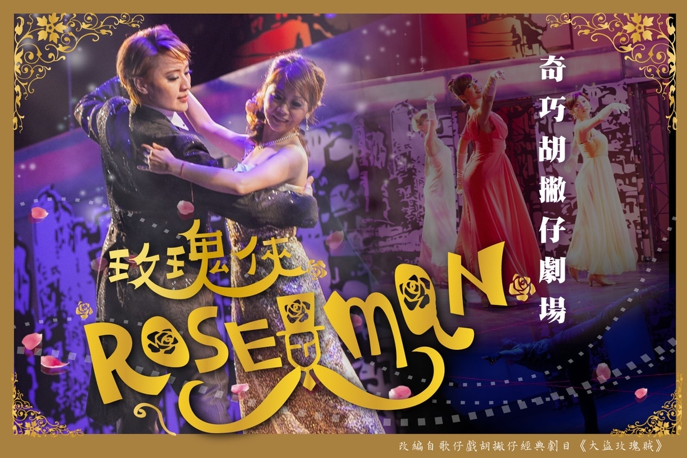
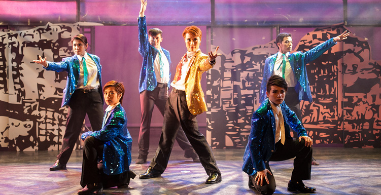

WORK · 2014
《Roseman 玫瑰俠》
編劇・導演・主演

取胡撇仔之神、寶塚歌舞之形
奇巧胡撇仔劇場第一號作品。向歌仔戲經典劇碼《大盜玫瑰賊》致敬，以現代時空重新解構，添加新世代的詮釋與思維，探討社會對英雄的期盼與幻想。
作品以華麗、娛樂與快速轉換包裹「英雄如何被製造」的問題，也奠定奇巧後續胡撇仔系列把流行文化、跨劇種表演與傳統戲曲重新組裝的方向。
CREATION
英雄的現代想像
胡撇仔在這裡不是懷舊標籤，而是一種創作方法：能快速吸收寶塚式華麗、現代流行語彙與戲曲身段，再以新的節奏重新組織。作品因此同時保留戲曲的「戲味」與現代觀眾熟悉的娛樂速度。
英雄是被需要的，還是被想像出來的？
PRODUCTION PHOTOS
演出劇照

CRITICAL RESPONSE
評論節錄
精緻的娛樂，將胡撇仔戲的美學做了相當成功的現代呈現
臺灣大學戲劇系 林鶴宜教授評論